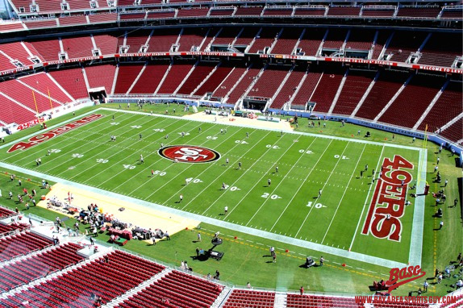

Le Superbowl
Le Super Bowl est la finale du championnat de football américain qui voit s'affronter les vainqueurs des deux conférences pour le titre
de champion de la NFL. C'est l’événement sportif le plus regardé aux États-Unis.
Cette année, le Superbowl aura lieu dans le magnifique nouveau stade des 49ers, à savoir le Levi's Stadium.

Palmarès
Voici le palmarès du Superbowl des 5 dernières années:
| Année |
Superbowl |
Vainqueur |
Score |
Finaliste |
Lieu |
| Saison 2010 |
XLV |
Packers de Green Bay |
31-25 |
Steelers de Pittsburgh |
Texas |
| Saison 2011 |
XLVI |
Giants de New York |
21-17 |
Patriots de la Nouvelle-Angleterre |
Indiana |
| Saison 2012 |
XLVII |
Ravens de Baltimore |
31-34 |
49ers de San Fransisco |
Louisianne |
| Saison 2013 |
XLVIII |
Seehawks de Seattle |
31-8 |
Broncos de Denver |
New Jersey |
| Saison 2014 |
XLIX |
Patriots de la Nouvelle-Angleterre |
28-24 |
Seehawks de Seattle |
Arizona |
Moment mémorable
Les Superbowls se jouent souvent à des détails, sur une action parfois. Ce fut le cas lors du dernier Superbowl notamment, où la victoire
se joua sur une interception des Patriots.